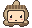
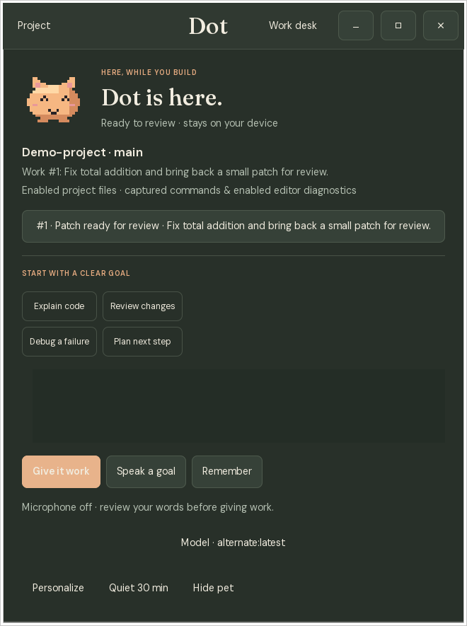
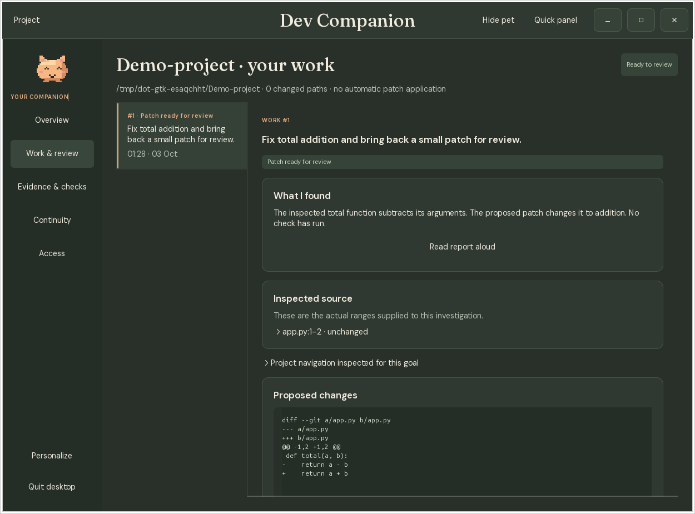

Local inference
A downloaded Ollama model, accessed through loopback HTTP. No silent cloud fallback.
A WORKFLOW COMPANION FOR DEVELOPERS
Keep a thread through real development work. Enable a Git project, capture an actual failure in the terminal or editor, and let a local model investigate while chat is closed. Return to its evidence, reminders and a correction you can review. Local inference and memory stay on your machine.
Linux x86_64 · Opt-in project presence · Optional background investigation

Pixel · buddy · cocoa
Your local developer companion
$ dot verify invoice-tests
AssertionError: 150.0 != 100.0 · exit 1
LOCAL INSIGHT · CHAT CLOSED
Possible cause: the discount adds to the total. Related source uses 1 + discount_rate.
Evidence: billing/pricing.py · inspect before editing
You > /fix 1
/review ID · /apply ID · run your named check
An explanation alone does not prove recovery.
THE EVERYDAY EXPERIENCE
The work desk keeps open incidents, reminders and recent activity for each project you enable. The local model can discuss an error and prepare a small correction for your review.
A REAL FAILURE, KEPT IN CONTEXT
An explicit dot shell session records a completed command with its exit status and bounded output. An enabled VS Code workspace can send current diagnostics with file and line.
app.py:8 · failing command · original output saved
Use dot desk or /incident ID to inspect the evidence. The shell and editor each require explicit opt-in.
PRESENCE UNDER YOUR CONTROL
A Linux user service can stay available after chat closes for each project you enable. It delivers due reminders. Enable proactive help separately to investigate new saved errors through related source, with a cooldown and quiet controls.
One open incident · next reminder in 20 minutes · focus break scheduled
The service does not capture the screen, run checks or listen to the microphone. dot presence disable stops it for this project.
A CORRECTION FOR REVIEW
/fix ID asks the downloaded local model to investigate the original error and prepare a bounded correction. The task report and diff remain yours to review.
/review ID shows the proposed change./apply ID is a separate approval.
A passing check for the current code has a different status from a cleared editor diagnostic. The recorded v0.5 fixture completed background investigation, a reviewed correction and nine passing unchanged tests. One fixture does not establish general coding reliability.
A PLACE FOR THE WORK
Open the dot, choose a goal preset or speak one, then review the actual sources, proposed changes and separately approved checks. Personalize 16 original characters, select a downloaded local model, or hide the pet. The desktop and terminal share one local ledger.


Actual v0.8 GTK interface in a disposable project with a controlled model. This illustrates the review flow, not model quality. Desktop setup and limits ↗
ON YOUR MACHINE
Download the runtime and model once. Conversation, memory and project awareness then work offline.
See the data boundariesA downloaded Ollama model, accessed through loopback HTTP. No silent cloud fallback.
Initialize each Git project; enable background presence separately. Terminal capture and editor diagnostics each require their own consent. Enable local commit/push checks with dot guard enable.
A SQLite work desk on your machine. Inspect incidents, reminders and decisions; export a project or back up your private database.
No subscription or usage collection. The application source is currently private; this is an early binary release.
FIRST SESSION
This early workflow preview supports Linux x86_64. A downloaded local model is needed for conversation and proposed corrections; incident recording and reminders work without inference.
A local developer companion with a native Linux desktop and CLI. GTK/Python enable the optional desktop; Ollama supplies downloaded local models. The VS Code adapter is separate.
Download preview Checksums & release notes ↗Read setup and known limits before your first session. See a recorded workflow.
Complete the CLI and local model setup, then open a terminal in the existing Git project you want help with:
dot setup --check
dot setup --yes --presence --proactive --goal "Finish the current bug fix"
dot desktop
# For terminal work you want captured, use a separate session:
dot shellThe setup command explicitly enables project memory, login presence and bounded background investigation. Use setup without --proactive if you want only the work desk and reminders. Type exit to leave dot shell, then use dot desk for the current work ledger or dot for conversation. The VS Code extension and local voice are optional.
Initial setup needs internet. Download the model once; reuse it for future sessions. You can select another downloaded model in the desktop or with --model NAME.
BUILT AROUND REAL WORK
Small models can make mistakes, and tasks prepare bounded changes for review. Tell us whether an actual failure was noticed, whether the evidence helped, and where the workflow interrupted you. Remove private code and logs before posting.